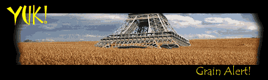
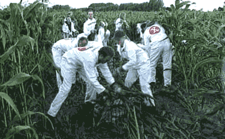
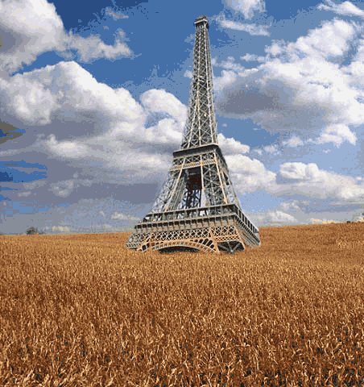

<html>


<!-- Mirrored from www.exitmundi.nl/gmfood.htm by HTTrack Website Copier/3.x [XR&CO'2014], Mon, 28 Jun 2021 00:56:29 GMT -->
<!-- Added by HTTrack --><meta http-equiv="content-type" content="text/html;charset=UTF-8" /><!-- /Added by HTTrack -->
<head>
<meta http-equiv="Content-Language" content="en-us">
<meta http-equiv="Content-Type" content="text/html; charset=windows-1252">
<meta name="GENERATOR" content="Microsoft FrontPage 4.0">
<meta name="ProgId" content="FrontPage.Editor.Document">
<title>The Day Our Food Bites Back!</title>
</head>

<body bgcolor="#000000" text="#FFFFFF" link="#00FFFF" vlink="#FF00FF">

<p align="center"></p>
<blockquote>
  <p class="MsoNormal" align="center"><span lang="EN-US"><font face="Arial" color="#FF9900"><b>It’s
  about the weirdest apocalypse you could think of. One day, our planet may
  become completely overgrown with… food. And the problem is: it could happen
  a lot sooner than you held possible.</b></font></span></p>
  <p class="MsoNormal"><span lang="EN-US"><font face="Arial"><div align="right">
    <table border="0" width="120" align="right" height="600">
      <tr>
        <td width="100%"><script type="text/javascript"><!--
google_ad_client = "pub-5046374505441754";
google_ad_width = 120;
google_ad_height = 600;
google_ad_format = "120x600_as";
google_ad_type = "text_image";
//2007-01-16: Indexbreed-grijzig, Grafieten hap
google_ad_channel = "9064366162+6276089418";
google_color_border = "CC0000";
google_color_bg = "CCCCCC";
google_color_link = "CC0000";
google_color_text = "333333";
google_color_url = "666666.html";
//--></script>
<script type="text/javascript"
  src="../pagead2.googlesyndication.com/pagead/f.txt">
</script></td>
      </tr>
    </table>
  </div>It will be some
  end. Suddenly, there will be grain everywhere. Grain in the countryside. Grain
  on the beaches. Grain shooting up along every road. In your backyard: grain.
  Popping up from the cracks in sidewalks: more grain. Everywhere you look and
  everywhere you go – grain, grain, grain. Now if that isn’t a green
  revolution, what is?</font></span>
  <p class="MsoNormal"><span lang="EN-US"><font face="Arial">Of course,
  there’ll be plenty to eat. But there’s a drawback: bread will also be the <b>
  only</b> thing around. The grain will overrun all other crops. Agriculture will be
  disrupted. Forests and grasslands will be demolished. Slowly, the entire food
  chain breaks down, as the face of the planet turns into an endless field of
  waving grain.</font></span></p>
  <p class="MsoNormal"><span lang="EN-US"><font face="Arial">Governments will
  speak of the `Grain Problem’ and cook up plans to push the grain back. But
  the grain won’t listen. Suddenly, mankind finds itself in trouble. Diseases
  emerge, people go blind or develop brittle bones -- all because of the
  one-sidedness of their diet.</font></span></p>
  <div align="left">
    <table border="1" width="162" bordercolor="#C0C0C0" align="left">
      <tr>
        <td width="100%"></td>
      </tr>
    </table>
  </div>
  <p class="MsoNormal"><span lang="EN-US"><font face="Arial"><font color="#FF9900">And
  then there are the side-effects.</font> Every now and then, suffocating
  grain dust tempests sweep over the planet. Incredible grain field fires
  occasionally burn down a country or two. Entire continents dry up, as the
  grain sips up all the water. The atmosphere, having to deal with the grain
  dust, the smoke from the grain fires and the lack of water, will get messed
  up. There may be an <a href="Iceage.html">Ice Age</a>, or even a kind of <a href="nukes.html">Nuclear
  Winter</a>. It isn’t very hard to see what it all boils down to. Humanity is
  thrown back into the Stone Age – well, `Grain Age’ is a more accurate
  word. So next time you have a slice of bread, just remember: one day, bread
  could do us all in.</font></span></p>
  <p class="MsoNormal"><span lang="EN-US"><font face="Arial"><font color="#FF9900">Sounds far-fetched?
  Sorry, but it isn’t – not at all.</font> The grain we’re dealing with here
  isn’t just the next species of grain. We’re talking <b> Super Grain</b> here;
  grain that is genetically modified. Already, there are hundreds of
  genetically modified (GM) crops around. The idea is quite simple. Genes define
  the properties of everything that grows and lives. So in genetic engineering, what you
  basically do, is take a crop, add a gene here, take out a gene there – and
  there you have it: a new species of grain, with some handy new properties.</font></span></p>
  <p class="MsoNormal"><span lang="EN-US"><font face="Arial"><font color="#FF9900">Genetic
  engineering is quite cool, really.</font> You can make Super Maize that’s
  resistant to certain diseases, so you don’t have to spray all those
  polluting pesticides over them. You can create a new brand of Super Rice
  that’s nutritious enough to feed even the poorest country. Heck, you can
  even piece together a Super Apple that protects your teeth from rotting. Or a
  Super Potato that survives frost. A Super Tomato that grows in salt water. If
  you think that sounds too weird to be true, don’t look now: all these crops
  already exist today!</font></span></p>
  <p class="MsoNormal"><span lang="EN-US"><font face="Arial">Of course,
  governments and genetic companies are cautious. You just DON’T want your new
  breed of Super Crop to accidentally mix up with the common stuff. Genes pass
  from one generation to the next. So if you mix up genetically modified crops
  with common crops, in no time you’ll only have the GM species left – GM
  crops having a huge evolutionary advantage over the ordinary stuff.</font></span></p>
  <p class="MsoNormal"><span lang="EN-US"><font face="Arial"><font color="#FF9900">Still,
  this `leaking’ of GM crops into normal nature is exactly what is happening
  as we speak.</font> In China, where there’s little government control over
  GM farming, the so-called Golden Rice is rapidly replacing common rice. At the
  moment we write this (March 2002), 5,5 million farmers worldwide grow GM
  crops. In only four years time, the amount of farmland occupied by GM crops
  has doubled, from 25 million hectares of farmland in 1998 to more than 50
  million hectares in 2002. That’s an area the size of Italy!</font></span></p>
  <div align="right">
    <table border="0" width="283" align="right">
      <tr>
        <td width="100%"></td>
      </tr>
      <tr>
        <td width="100%">
          <p align="center"><font color="#FFFF00" face="Arial" size="2">
          <b>Corn killers</b>: Experimental GM crop fields are regularly
          demolished by protesters. But there's a catch: on at least two
          occasions, the protestors helped the GM plants escape into nature,
          accidentally taking the seeds with them on their clothes and shoes.</font></td>
      </tr>
    </table>
  </div>
  <p class="MsoNormal"><span lang="EN-US"><font face="Arial">Meanwhile, in the
  West, every now and then an accident happens. In Canada, genetically altered
  oilseed rape `escaped’ from the test fields into the countryside. Right now,
  Super Oilseed Rape is shooting up everywhere in Canada. And in Mexico,
  genetically altered Super Maize suddenly showed up in November 2001. This
  really baffled everyone – Mexico has banned all GM farming years ago!</font></span></p>
  <p class="MsoNormal"><span lang="EN-US"><font face="Arial">So, it only seems
  reasonable to conclude that one day, most crops on the planet will be
  genetically tinkered with in one way or the other. OK, so what, you may ask. As long as
  it tastes good, there’s no need to worry, right?</font></span></p>
  <p class="MsoNormal"><span lang="EN-US"><font face="Arial"><font color="#FF9900">Well
  – there are these disturbing risks.</font> One day soon, we may create a
  true Super Crop that is utterly resistant to disease and pollution, and is
  able to grow in literally every environment. A crop like that might take over
  the countryside in no time – and start haunting us. Your beloved new crop will turn
  out a pain in the ass, an ineradicable Super Weed. No deterrent will kill it,
  no climate will stop it. There you have it: the Grain Problem. And of course,
  we said `grain’ only for arguments sake. It could be soy, or maize, or rice.
  Or raspberries, tomatoes, cucumber or lychees -- whatever you can think of.</font></span></p>
  <p class="MsoNormal"><span lang="EN-US"><font face="Arial">Oh, and of course
  it would be rather inconvenient if of all crops the Super
  Crop that conquers the world turns out to be... cotton. What would we have to
  eat? Cotton cookies, perhaps?</font></span></p>
  <p class="MsoNormal"><span lang="EN-US"><font face="Arial"><font color="#FF9900">And
  wait: what about `Contraceptive Corn’?</font> In early 2002, the San
  Diego-based biotech company Epicyte developed a new breed of GM corn that can
  be used as a contraceptive. The corn kills the sperm cells of men that eat it,
  rendering them <a href="Sperm%20problem.html">infertile</a>. Well, you just
  DON’T want a crop like that to conquer the world. Humanity would be, er…
  fucked. Within one or two generations, our species would no longer be there.</font></span></p>
  <div align="left">
    <table border="0" width="231" align="left">
      <tr>
        <td width="100%"></td>
      </tr>
      <tr>
        <td width="100%"><font color="#FFFF00" face="Arial" size="2">
          Paris, 2050?</font></td>
      </tr>
    </table>
  </div>
  <p class="MsoNormal"><span lang="EN-US"><font face="Arial">And then there’s
  the remote but rather unpleasant possibility that a GM crop suddenly brings
  forth some kind of new <a href="virus.html">killer virus or bacterium</a>. No,
  really! Toying around with a plant’s genes may accidentally `awaken’ an
  inactive, old virus that lays buried deep within the plant’s DNA. Just picture that: cheerfully, you go out to harvest your brand
  new GM crop, but when you get back, your skin has suddenly turned blue with
  pink dots, due to some incredibly weird and exotic new disease.</font></span></p>
  <p class="MsoNormal"><span lang="EN-US"><font face="Arial">Just imagine what a
  bummer that would be. Finally, we’ve created a crop that is so totally
  perfect that you can grow it anywhere you like. Well – except you can’t
  eat it, it’s growing all over the place, and it makes you ill or infertile.
  It would be the biggest joke in history. And, probably, the last.</font></span></p>

<blockquote>
  <p class="MsoNormal" style="text-align:justify;line-height:12.0pt;tab-stops:-72.0pt -36.0pt"><span lang="EN-US" style="letter-spacing:-.15pt"><font face="MS Sans Serif"><o:p>
  </font></span></p>
  <div align="right">
    <table border="0">
      <tr>
        <td><span lang="EN-US" style="letter-spacing:-.15pt"><font face="MS Sans Serif"><a href="mailto:mke@xs4all.nl"></a>
  </font></span></td>
        <td><span lang="EN-US" style="letter-spacing:-.15pt"><font face="MS Sans Serif"><a href="intro2.html"></a>
  </font></span></td>
      </tr>
    </table>
  </div>
</blockquote>


</blockquote>
<div align="center">
    <center>
    <table border="0" width="728" height="90">
      <tr>
        <td width="100%"><script type="text/javascript"><!--
google_ad_client = "pub-5046374505441754";
google_ad_width = 728;
google_ad_height = 90;
google_ad_format = "728x90_as";
google_ad_type = "text_image";
//2007-01-16: kustblauw plat
google_ad_channel = "4730799746";
google_color_border = "336699";
google_color_bg = "FFFFFF";
google_color_link = "0000FF";
google_color_text = "000000";
google_color_url = "008000.html";
//--></script>
<script type="text/javascript"
  src="../pagead2.googlesyndication.com/pagead/f.txt">
</script></td>
      </tr>
    </table>
    </center>
  </div>

<p><!-- End Webstats4U code -->
</p>
<p align="center"><font size="2">All texts Copyright © Exit Mundi / AW Bruna
2000-2007.<br>
You're not allowed to copy, edit, publish, print or make public any material
from this website without written permission by Exit Mundi.</font></p>


<!-- Mirrored from www.exitmundi.nl/gmfood.htm by HTTrack Website Copier/3.x [XR&CO'2014], Mon, 28 Jun 2021 00:56:35 GMT -->
</html>
